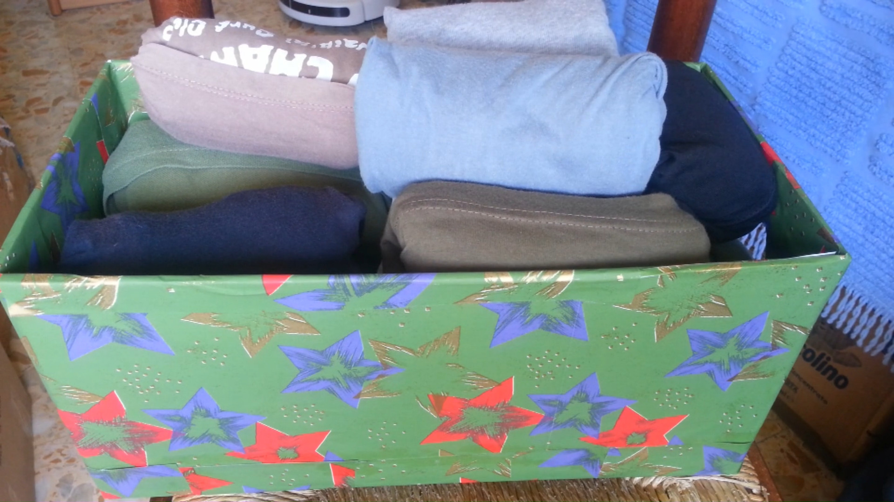

Oggi vedremo come costruire delle scatole per l'armadio, sfruttando i cartoni che di solito si gettano
Procuratevi dei cartoni abbastanza larghi e lunghi da entrare nell'armadio
Con un taglierino, tagliateli a metà.
Con del nastro adesivo chiudete l'estremità superiore.
Disegnate i manici, come in foto.
E ritagliateli con il taglierino.
Ricoprite tutta la superficie di colla.
Incolate la carta da pacco, esternamente ed internamente, come in foto.
Inserite i vostri vestiti nelle scatole.
Inserite le scatole nell'armadio.
Qui trovate il video: Video